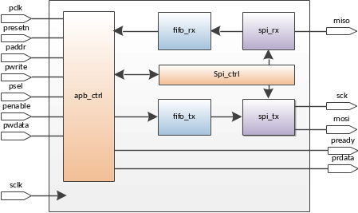

Типичным применением ehl_fifo является использование его в качестве буфера приемо-передатчика. Например, в контроллере интерфейса SPI. Со стороны CPU данные в fifo_tx записываются по AMBA APB, а читаются передатчиком spi_tx. Данные в fifo_rx записываются со стороны приемника spi_rx, а читаются CPU через AMBA APB.
Использование fifo в приемо-передатчике spi.
Для использования ehl_fifo в ПЛИС требуется обеспечить модуль источниками тактовых сигналов. После этого схема готова к использованию. В таблице представлены результаты синтеза схемы для различных семейств ПЛИС.
| Quartus II (10.0) | Ise 12.3 | |||||
| Stratix II - EP2S60F672C5ES | Virtex 5 - XC5VLX30-3FF324-3 | |||||
| FF | 90 | 289 | 546 | 26 | 32 | 34 |
| LUT | 43 | 135 | 218 | 35 | 49 | 65 |
| Memory bits | - | - | - | 64 | 256 | 512 |
| Fmax wclk | 98 | 92 | 91 | 418 | 404 | 400 |
| Fmax rclk | 90 | 80 | 76 | 420 | 460 | 417 |
| WIDTH_DIN | 8 | 16 | 32 | 8 | 16 | 32 |
| WIDTH_DOUT | 8 | 16 | 8 | 8 | 16 | 8 |
| DEPTH | 8 | 16 | 16 | 8 | 16 | 16 |
| SYNC_STAGE | 2 | |||||
Логический синтез ehl_fifo на библиотеке Artisan 90 нм в типичных условиях с реализацией памяти на триггерах дает следующие результаты.
| Тип | Значение | ||
|---|---|---|---|
| Триггеры | 90 | 28 | 546 |
| Инверторы | 13 | 18 | 28 |
| Логический вентили | 103 | 258 | 492 |
| Тактовая частоты, МГц | 314 | 271 | 247 |
| WIDTH_DIN | 8 | 16 | 32 |
| WIDTH_DOUT | 8 | 16 | 8 |
| DEPTH | 8 | 16 | 16 |
| SYNC_STAGE | 2 | 2 | 2 |
Схема синхронна и соответствует требованиям DFT. Процент тестового покрытия дефектов типа Stuck-at составляет 100% для указанных в таблице 6 модификаций.
Временные ограничения на каждую частоту задаются в зависимости от применения схемы. Переход между тактовыми частотами внутри схемы может быть ограничен параметром максимальной задержки. Исправление setup/hold между доменами не требуется, т.к. реализована схема защиты от метастабильности.
Входные и выходные задержки должны выбираться из применения схемы. Рекомендуется использовать значение 40% от периода синхросигнала.
Верификация ehl_fifo проводится с помощью тестового модуля fifo_tb. В процессе теста проверяются следующие утверждения::
Тест проводится для максимального набора допустимых параметров и для различных соотношений частота wclk и rclk.
fifo_tb показывает следующие результаты по покрытию кода:
| Тип покрытия | Количество проверок | ||
|---|---|---|---|
| Block | 47/47 (100%) | 47/47 (100%) | 61/61 (100%) |
| Expression | 108/108 (100%) | 108/108 (100%) | 124/124 (100%) |
| Toggle | 186/190 (98%) | 260/264 (98%) | 375/377 (99%) |
|
WIDTH_DIN=8 WIDTH_DOUT=8 DEPTH=8 SYNC_STAGE=2 |
WIDTH_DIN=16 WIDTH_DOUT=16 DEPTH=16 SYNC_STAGE=2 |
WIDTH_DIN=32 WIDTH_DOUT=8 DEPTH=16 SYNC_STAGE=2 |
|